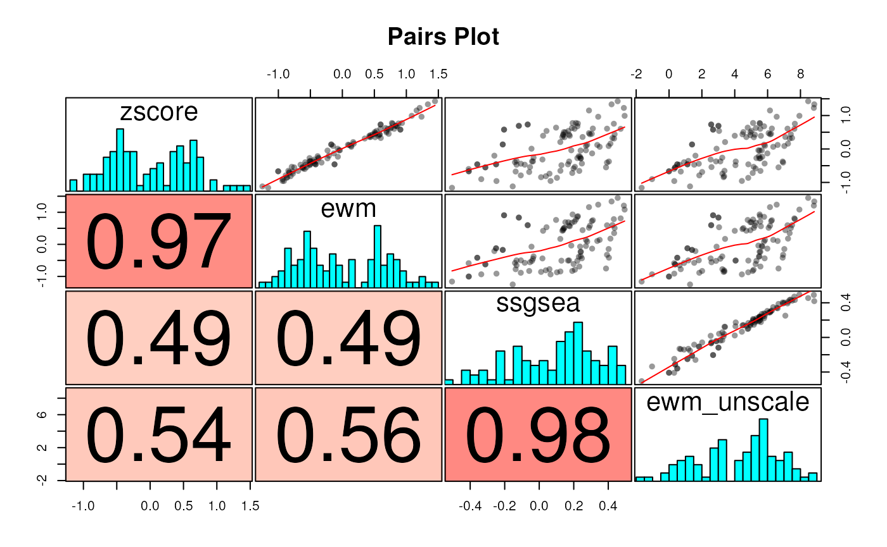

Performing gene set enrichment analyses with sparrow
Steve Lianoglou
26 May 2024
Source:vignettes/sparrow.Rmd
sparrow.RmdAbstract
The sparrow package facilitates the use of gene sets in the analysis of high throughput genomics data. It provides simple execution and comparison of several GSEA approaches through a unified interface within the user’s workspace or interactively via a shiny application provided by the sparrow.shiny package. This package also provides an easy wrapper to single sample gene set scoring and geneset-centric heatmaps for visualization. sparrow package version: 1.11.0
Overview
The sparrow package was built to facilitate the use of gene sets in the analysis of high throughput genomics data (primarily RNA-seq). It does so by providing these top-line functionalities:
- The
seasfunction is a wrapper that orchestrates the execution of any number of user-specified gene set enrichment analyses (GSEA) over a particular experimental contrast of interest. This will create aSparrowResultobject which stores the results of each GSEA method internally, allowing for easy query and retrieval. - A sister
{sparrow.shiny}package provides anexplorefunction, which is invoked onSparrowResultobjects returned from a call toseas. The shiny application facilitates interactive exploration of these GSEA results. This application can also be deployed to a shiny server and can be initialized by uploading a serializedSparrowResult*.rdsfile. - An “over representation analysis” method
ora()which wraps the biased enrichment functionality found withinlimma::keggaand generalizes it to work against data.frame inputs with arbitrary genesets. - The
scoreSingleSamplesfunction is a wrapper that enables the user to generate single sample gene set scores using a variety of different single sample gene set scoring methods. - Convenience gene set collection retrieval functions that return
BiocSets from widely used databases, likegetMSigCollection()(MSigDB),getKeggCollection()(KEGG),getPantherCollection()(PANTHER database), andgetReactomeCollection()(Reactome) with support for different organisms and identifier types (partially).
The initial GSEA methods that sparrow wrapped were the ones provided by limma and edgeR. As such, many analyses using sparrow expect you to re-use the same data objects used for differential expression analysis, namely:
- Expression data (an
EList,DGEList, or expression matrix) - A design matrix
- A contrast vector/matrix (if your design and comparison require it)
Other methods only require the user to provide a ranked vector of statistics that represent some differential expression statistic per gene, and the GSEA is performed by analyzing the ranks of genes within this vector.
The user can invoke one seas() call that can orchestrate
multiple analyses of any type.
Currently supported gene set enrichment methods include:
## method test_type package
## 1 camera preranked limma
## 2 cameraPR preranked limma
## 3 fgsea preranked fgsea
## 4 ora ora ora
## 5 fry preranked limma
## 6 roast preranked limma
## 7 romer preranked limma
## 8 goseq ora goseq
## 9 geneSetTest preranked limma
## 10 logFC preranked limma
## 11 svdGeneSetTest meta sparrowWhen using these methods in analyses that lead to publication, please cite the original papers that developed these methods and cite sparrow when its functionality assisted in your interpretation and analysis.
The sparrow package provides a small example expression dataset
extracted from the TCGA BRCA dataset, which is available via the
exampleExpressionSet function. In this vignette we will
explore differential expression and gene set enrichment analysis by
examining differences between basal and her2 PAM50 subtypes.
Standard Workflow
Let’s begin by setting up our work environment for exploratory analysis using the sparrow package.
library(sparrow)
library(magrittr)
library(dplyr)
library(ggplot2)
library(ComplexHeatmap)
library(circlize)
library(edgeR)
library(data.table)
theme_set(theme_bw())Internally, sparrow leverages the data.table
package for fast indexing and manipulation over data.frames. All
functions that return data.frame looking objects back have converted it
from an data.table prior to return. All such functions take an
as.dt argument, which is set to FALSE by
default that controls this behavior. If you want sparrow
to return a data.table back to you from some function, try adding an
as.dt = TRUE argument to the end of the function call.
Data Setup
sparrow is most straightforward to use when our data objects and
analysis are performed with either the edgeR or voom/limma pipelines and
when we use standard gene identifiers (like esnemble) as
rownames() to these objects.
The exampleExpressionSet function gives us just such an
object. We call it below in a manner that gives us an object that allows
us to explore expression differences between different subtypes of
breast cancer.
vm <- exampleExpressionSet(dataset = "tumor-subtype", do.voom = TRUE)Below you’ll find the $targets data.frame of the voomed
EList
## Patient_ID Cancer_Status PAM50subtype
## TCGA-A2-A0CM-01A-31R-A034-07 TCGA-A2-A0CM tumor Basal
## TCGA-BH-A0RX-01A-21R-A084-07 TCGA-BH-A0RX tumor Basal
## TCGA-BH-A18Q-01A-12R-A12D-07 TCGA-BH-A18Q tumor Basal
## TCGA-B6-A0RU-01A-11R-A084-07 TCGA-B6-A0RU tumor Basal
## TCGA-BH-A18P-01A-11R-A12D-07 TCGA-BH-A18P tumor Her2
## TCGA-C8-A275-01A-21R-A16F-07 TCGA-C8-A275 tumor Her2
## TCGA-C8-A12Z-01A-11R-A115-07 TCGA-C8-A12Z tumor Her2
## TCGA-A2-A0T1-01A-21R-A084-07 TCGA-A2-A0T1 tumor Her2
## TCGA-AC-A3OD-01A-11R-A21T-07 TCGA-AC-A3OD tumor LumA
## TCGA-AN-A0XS-01A-22R-A109-07 TCGA-AN-A0XS tumor LumA
## TCGA-A2-A0EM-01A-11R-A034-07 TCGA-A2-A0EM tumor LumA
## TCGA-AR-A24O-01A-11R-A169-07 TCGA-AR-A24O tumor LumA
## TCGA-D8-A4Z1-01A-21R-A266-07 TCGA-D8-A4Z1 tumor LumANote that there are many tutorials online that outline how to
generate expression matrices for use with differential expression and
analysis, such as the one that is returned from the
exampleExpressionSet function. Summarizing assay data into
such a format is out of scope for this vignette, but you can reference
the airway
vignette for full details (among others).
Data Analysis
We will identify the genes and genesets that are differentially
expressed between the basal and her2 subtypes. The vm
object has already been voomd using this design:
vm$design## Basal Her2 LumA
## TCGA-A2-A0CM-01A-31R-A034-07 1 0 0
## TCGA-BH-A0RX-01A-21R-A084-07 1 0 0
## TCGA-BH-A18Q-01A-12R-A12D-07 1 0 0
## TCGA-B6-A0RU-01A-11R-A084-07 1 0 0
## TCGA-BH-A18P-01A-11R-A12D-07 0 1 0
## TCGA-C8-A275-01A-21R-A16F-07 0 1 0
## TCGA-C8-A12Z-01A-11R-A115-07 0 1 0
## TCGA-A2-A0T1-01A-21R-A084-07 0 1 0
## TCGA-AC-A3OD-01A-11R-A21T-07 0 0 1
## TCGA-AN-A0XS-01A-22R-A109-07 0 0 1
## TCGA-A2-A0EM-01A-11R-A034-07 0 0 1
## TCGA-AR-A24O-01A-11R-A169-07 0 0 1
## TCGA-D8-A4Z1-01A-21R-A266-07 0 0 1
## attr(,"assign")
## [1] 1 1 1
## attr(,"contrasts")
## attr(,"contrasts")$PAM50subtype
## [1] "contr.treatment"We can test for differences between basla and her2 subtypes using the following contrast:
(cm <- makeContrasts(BvH=Basal - Her2, levels=vm$design))## Contrasts
## Levels BvH
## Basal 1
## Her2 -1
## LumA 0Differential Gene Expression
In this section, we first show you the straightforward analysis you would do if you were only testing for differential gene expression.
With the data we have at hand, you would simply do the following:
fit <- lmFit(vm, vm$design) %>%
contrasts.fit(cm) %>%
eBayes
tt <- topTable(fit, 'BvH', n=Inf, sort.by='none')Gene Set Enrichment Analysis
Given that we now have all of the pieces of data required for a
differential expression analysis, performing GSEA is trivial using the
seas wrapper function. We simply need to now define (1) the
battery of gene sets we want to test against, and (2) the GSEA methods
we want to explore.
Gene Sets to Test
The sparrow package provides a GeneSetDb class
to store collections of gene sets. The GeneSetDb object is
used heavily for the internal functionality of sparrow,
however you can provide sparrow with collections of gene sets using
other containers from the bioconductor universe, like a
BiocSet::BiocSet or a
GSEABase::GeneSetCollection. This package provides
convenience methods to convert between these different types of gene set
containers. Please refer to The
GeneSetDb Class section for more details.
The {sparrow} package also provides convenience methods to retrieve
gene set collections from different sourckes, like MSigDB, PANTHER, KEGG, etc. These methods are
named using the following pattern:
get<CollectionName>Collection() to return a
BiocSet with the gene sets from the collection, or
get<CollectionName>GeneSetDb() to get a
GeneSetDb of the same.
We’ll use the getMSigGeneSetDb convenience function
provided by the sparrow package to load the hallmark
("h") and c2
(curated) ("c2") gene set collections from MSigDB.
gdb <- getMSigGeneSetDb(c("h", "c2"), "human", id.type = "entrez")To retrieve a BiocSet of these same collections, you
could do:
bsc <- getMSigCollection(c("h", "c2"), "human", id.type = "entrez")You can view a table of the gene sets defined inside a
GeneSetDb (gdb)object via its
geneSets(gdb) accessor:
## collection name active N
## 1 C2 ABBUD_LIF_SIGNALING_1_DN FALSE 28
## 2 C2 ABBUD_LIF_SIGNALING_1_UP FALSE 43
## 3 C2 ABBUD_LIF_SIGNALING_2_DN FALSE 7
## 4 C2 ABBUD_LIF_SIGNALING_2_UP FALSE 13
## 5 C2 ABDELMOHSEN_ELAVL4_TARGETS FALSE 16
## 6 C2 ABDULRAHMAN_KIDNEY_CANCER_VHL_DN FALSE 13Running sparrow
Performing multiple gene set enrichment analyses over your contrast
of interest simply requires you to provide a GeneSetDb (or
BiocSet) object along with your data and an enumeration of
the methods you want to use in your analysis.
The call to seas() will perform these analyses and
return a SparrowResult object which you can then use for
downstream analysis.
mg <- seas(
vm, gdb, c('camera', 'fry', 'ora'),
design = vm$design, contrast = cm[, 'BvH'],
# these parameters define which genes are differentially expressed
feature.max.padj = 0.05, feature.min.logFC = 1,
# for camera:
inter.gene.cor = 0.01,
# specifies the numeric covariate to bias-correct for
# "size" is found in the vm$genes data.frame, which makes its way to the
# internal DGE statistics table ... more on that later
feature.bias = "size")We will unpack the details of the seas() call shortly
…
Implicit Differential Expression
First, let’s note that in addition to running a plethora of GSEA’s
over our data we’ve also run a standard differential expression
analysis. If you’ve passed a matrix,
ExpressionSet or EList into
seas(), a limma-based
lmFit %>% (eBayes|treat) %>% (topTable|topTreat)
pipeline was run. If a DGEList was passed, then
seas utilizes the edgeR-based
glmQLFit %>% (glmQLFTest | glmTreat) %>% topTags
pipeline.
The result of the internally run differential expression analysis is
accessible via a call to logFC function on the
SparrowResult object:
## symbol entrez_id logFC t pval padj
## 1 A1BG 1 0.67012895 1.07951394 0.2982819 0.6858344
## 2 ADA 100 0.53844094 0.92401125 0.3708544 0.7415607
## 3 CDH2 1000 -0.08180996 -0.09901074 0.9225083 0.9795974
## 4 AKT3 10000 0.58338138 1.29502525 0.2158892 0.6125318
## 5 LOC100009676 100009676 -0.09581391 -0.26985709 0.7911366 0.9398579
## 6 MED6 10001 0.04505155 0.15082239 0.8822288 0.9701384We can confirm that the statistics generated internally in
seas() mimic our explicit analysis above by verifying that
the t-statistics generated by both approaches are identical.
comp <- tt %>%
select(entrez_id, logFC, t, pval=P.Value, padj=adj.P.Val) %>%
inner_join(lfc, by='entrez_id', suffix=c('.tt', '.mg'))
all.equal(comp$t.tt, comp$t.mg)## [1] TRUEThe internally performed differential expression analysis within the
seas() call can be customized almost as extensively as an
explicitly performed analysis that you would run using limma or edgeR by
sending more parameters through seas()’s ...
argument.
See the Custom
Differential Expression section further in the vignette as well
as the help available in ?calculateIndividualLogFC (which
is called inside the seas() function) for more
information.
Explicit GSEA
We also have the results of all the GSEA analyses that we specified
to our seas call via the methods
parameter.
mg## SparrowResult (max FDR by collection set to 0.20%)
## ---------------------------------------------------
## collection method geneset_count sig_count sig_up sig_down
## 1 C2 camera 6150 349 206 143
## 2 H camera 50 6 5 1
## 3 C2 fry 6150 95 33 62
## 4 H fry 50 0 0 0
## 5 C2 ora 6150 96 33 63
## 6 H ora 50 3 1 2
## 7 C2 ora.down 6150 73 6 67
## 8 H ora.down 50 2 0 2
## 9 C2 ora.up 6150 24 21 3
## 10 H ora.up 50 0 0 0The table above enumerates the different GSEA methods run over each
geneset collection in the rows. The columns enumerate the number of
genesets that the collection has in total (geneset_count),
and how many were found significant at a given FDR, which is set to 20%
by default. The show command for the
SparrowResult object simply calls the
tabulateResults() function, which you can call directly
with the value of max.p that you might find more
appropriate.
Exploring Results
GSEA results can be examined interactively via the command line, or
via a shiny application. You can use the resultNames
function to find out what GSEA methods were run, and therefore available
to you, within the the SparrowResult object:
resultNames(mg)## [1] "camera" "fry" "ora" "ora.down" "ora.up"Note that when running an “over representation analysis”
"ora" (or "goseq"), it will be run three
different ways. The tests will be run first by testing all
differentially expressed genes that meet a given set of min logFC and
max FDR thresholds, then separately for only genes that go up in your
contrast, and a third time for only the genes that go down.
The individual gene set statistics generated by each method are
available via the result function (or several can be
returned with results):
You can identify genesets with the strongest enrichment by filtering and sorting against the appropriate columns. We can, for instance, identify which hallmark gene sets show the strongest enrichment as follows:
cam.res %>%
filter(padj < 0.1, collection == 'H') %>%
arrange(desc(mean.logFC)) %>%
select(name, n, mean.logFC, padj) %>%
head## name n mean.logFC padj
## 1 HALLMARK_MYC_TARGETS_V2 58 0.4461105 0.0002612790
## 2 HALLMARK_INTERFERON_ALPHA_RESPONSE 96 0.3916716 0.0874709010
## 3 HALLMARK_E2F_TARGETS 200 0.3465703 0.0001892151
## 4 HALLMARK_MYC_TARGETS_V1 200 0.2092836 0.0234431144You can also list the members of a geneset and their individual
differential expression statistics for the contrast under test using the
geneSet function.
geneSet(mg, name = 'HALLMARK_WNT_BETA_CATENIN_SIGNALING') %>%
select(symbol, entrez_id, logFC, pval, padj) %>%
head()## symbol entrez_id logFC pval padj
## 1 HDAC5 10014 0.8984691 0.02253974 0.2522754
## 2 CSNK1E 1454 -0.1793725 0.52104817 0.8317753
## 3 CTNNB1 1499 0.2577554 0.54741640 0.8467181
## 4 JAG1 182 0.7293432 0.02496690 0.2625306
## 5 DVL2 1856 0.4921509 0.24186744 0.6362028
## 6 DKK1 22943 0.6567652 0.66735589 0.8982828The results provided in the table generated from a call to
geneSet are independant of GSEA method. The statistics
appended to the gene set members are simply the ones generated from a
differential expression analysis.
Plotting
sparrow provides a number of interactive plotting facilities to explore the enrichment of a single geneset under the given contrast. In the boxplots and density plots shown below, the log fold changes (logFCs) (or t-statistics) for all genes under the contrast are visualized in the “background” set, and these same values are shown for the desired geneset under the “geneset” group.
The logFC (or t-statistics) of the genes in the gene set are plotted as points, which allow you to hover to identify the identity of the genes that land in the regions of the distributions you care about.
Including interactive plots increases the size of the vignette’s by
a lot and will be rejected by the bioconductor build servers,
so all plots included in this vignette are static snapshots of the
javascript enabled plots you would normally get from
iplot().
Boxplot
iplot(mg, 'HALLMARK_WNT_BETA_CATENIN_SIGNALING',
type = 'boxplot', value = 'logFC')
Density
iplot(mg, 'HALLMARK_WNT_BETA_CATENIN_SIGNALING',
type = 'density', value = 'logFC')
GSEA plot
iplot(mg, 'HALLMARK_WNT_BETA_CATENIN_SIGNALING',
type = 'gsea', value = 'logFC')
Interactive Exploration
A sister {sparrow.shiny}
package is available that can be used to interactively explore
SparrowResult objects to help you try to make sense of the
enrichment hits you get (or not!). The application can be invoked as
follows:
sparrow.shiny::explore(mg)
Please refer to the "sparrow-shiny" vignette in the {sparrow.shiny}
package for documentation on the application’s use.
The {sparrow.shiny} package is currently only available
to install from GitHub, but will be available through Bioconductor
soon.
Singe Sample Gene Set Scoring
It can be both convenient and effective to transform a gene-by-sample expression matrix to a geneset-by-sample expression matrix. By doing so, so we can quickly identify biological processes that are up/down regulated (loosely speaking) in each sample.
We can generate single sample gene set scores using the gene sets
defined in a GeneSetDb using the
scoreSingleSamples function. This function takes a
GeneSetDb, an expression container, and a
methods argument, which is analagous to the
methods argument in the seas() call: it
defines all of the scoring methos the user wants to apply to each
sample.
Let’s pick a few gene sets to score our samples with for this exercise. We’ll take the significant hallmark gene sets, or any other significant gene set that has a large (on average) log fold change between conditions.
sig.res <- cam.res %>%
filter(padj < 0.05 & (grepl("HALLMARK", name) | abs(mean.logFC) >= 2))
gdb.sub <- gdb[geneSets(gdb)$name %in% sig.res$name]Refer to the Subsetting a
GeneSetDb section to learn how to subset a GeneSetDb
object to create a derivative object with fewer gene sets.
Recall that the GSEA analysis we performed was perfomed between the Basal and Her2 subtypes, so we will use an expression matrix that only has the samples from those two groups.
Generating Single Sample Gene Set Scores
Once we have a GeneSetDb object that contains all of the
gene sets we wish to use to create single sample gene set scores, we can
use the scoreSingleSamples function to produce these scores
using a variety of algorithmes, which the user species using the
methods parameter.
The scoreSingleSamples function will return a long
data.frame with length(methods) * ncol(exprs)
rows. Each row represents the score for the given sample
using the specified method. You can subset against the
method column to extract all of the single sample scores
for a given method.
scores <- scoreSingleSamples(gdb.sub, vm.bh,
methods = c('ewm', 'ssgsea', 'zscore'),
ssgsea.norm = TRUE, unscale=FALSE, uncenter=FALSE,
as.dt = TRUE)## [1] "Calculating ranks..."
## [1] "Calculating absolute values from ranks..."
## [1] "Normalizing..."We can see how the scores from different methods compare to each other:
# We miss you, reshape2::acast
sw <- dcast(scores, name + sample_id ~ method, value.var="score")
corplot(sw[, -(1:2), with = FALSE], cluster=TRUE)It is, perhaps, interesting to compare how the ewm
method scores change when we choose not to “uncenter” and “unscale”
them:
ewmu <- scoreSingleSamples(gdb.sub, vm.bh,methods = "ewm",
unscale = TRUE, uncenter = TRUE, as.dt = TRUE)
ewmu[, method := "ewm_unscale"]
scores.all <- rbind(scores, ewmu)
swa <- dcast(scores.all, name + sample_id ~ method, value.var="score")
corplot(swa[, -(1:2), with = FALSE], cluster=TRUE)
Further exposition on the “ewm” (eigenWeightedMean) scoring method
can be found in the ?eigenWeightedMean function.
Visualizing Single Sample Gene Set Scores
The “long” data.frame nature of the results produced by
scoreSingleSamples makes it convenient to use with graphing
libraries like ggplot2 so that we can create arbitrary visualizations.
Creating boxplots for gene sets per subtype is an easy way to explore
these results.
Let’s annotate each row in scores.all with the subtype
annotation and observe how these methods score each sample for a few
gene sets.
all.scores <- scores.all %>%
inner_join(select(vm.bh$targets, sample_id=Sample_ID, subtype=PAM50subtype),
by = "sample_id")
some.scores <- all.scores %>%
filter(name %in% head(unique(all.scores$name), 5))
ggplot(some.scores, aes(subtype, score)) +
geom_boxplot(outlier.shape=NA) +
geom_jitter(width=0.25) +
facet_grid(name ~ method)Gene Set Based Heatmap with mgheatmap
We often want to create expression based heatmaps that highlight the
behavior of gene sets across our samples. The mgheatmap
function uses the ComplexHeatmap
package to create two different types of heatmaps:
- Gene based heatmaps, that split the genes (rows) based on their genesets
- Single sample gene set based heatmaps, optionally split by gene set collection.
The mgheatmap function has a set of arguments that
customize how the heatmap is to be created (gene level vs. gene set
level, whether to split it, etcv) and will also use the ...
argument to pass any parameters down to the inner
ComplexHeatmap::Heatmap function call and customize its
behavior. The mgheatmap function returns a
ComplexHeatmap,Heatmap object for plotting or combining
with other ComplexHeatmap heatmaps or annotations in order to create
arbitrarily complex/informative heatmap figures.
Gene level based heatmap (from genesets)
You can plot a heatmap of the genes from a predefined set of gene
sets by providing the gene sets you want to visualize in a
GeneSetDb object.
We’ll create a new GeneSetDb object using the first two
gene sets in gdb.sub and draw a heatmap of their
expression.
gs.sub <- geneSets(gdb.sub)
gdb.2 <- gdb.sub[geneSets(gdb.sub)$name %in% head(gs.sub$name, 2)]
col.anno <- HeatmapAnnotation(
df = vm.bh$targets[, 'PAM50subtype', drop = FALSE],
col = list(PAM50subtype = c(Basal = "gray", Her2 = "black")))
mgheatmap(vm.bh, gdb.2, aggregate.by = "none", split = TRUE,
show_row_names = FALSE, show_column_names = FALSE,
recenter = TRUE, top_annotation = col.anno, zlim = c(-3, 3))Gene set-based heatmap
You can often get a higher information:ink ratio by plotting heatmaps based on single sample gene set scores as opposed to the genes that make up a geneset.
Let’s see what the simple 2-geneset version of the heatmap above looks like:
mgheatmap(vm.bh, gdb.2, aggregate.by = "ewm", split = FALSE,
show_row_names = TRUE, show_column_names = FALSE,
top_annotation = col.anno)Plotted in this way, we can now show the activity of a greater number of genesets
mgheatmap(vm.bh, gdb.sub,
aggregate.by = 'ewm', split=TRUE, recenter = TRUE,
show_row_names=TRUE, show_column_names=FALSE,
top_annotation=col.anno, zlim = c(-2.5, 2.5))
The GeneSetDb Class
The GeneSetDb class was developed to address the internal needs of
the sparrow package for fast look up, subsetting, cross reference, etc.
of a collection of gene sets. At the time (~2015), it was developed
because the classes used for this purpose in the bioconductor ecosystem
(a GSEABase::GeneSetCollection, or a simple list of gene
vectors) didn’t cut the mustard.
More recently, bioc-core has developed a new class called a
BiocSet that is feature-rich and shares significant overlap
with the features in the sparrow::GeneSetDb class. Although
we can’t quite replace the internals of {sparrow} to use the
BiocSet just yet, users are encouraged to provide
collections of gene sets in the form of a BiocSet
everywhere {sparrow} functions require gene set collections, like
seas() and scoreSingleSamples(). You can also
convert a sparrow::GeneSetDb() to a BiocSet
via a simple call: as(gdb, "BiocSet").
The remainder of this section provides a quick overview of the
GeneSetDb class.
The GeneSetDb object uses the data.table package
internally for fast lookup. Internally the collection of gene set
information is minimally stored as a three-column
data.table in “long form”, which has the following
columns:
- collection
- name
- feature_id
More columns can be added to the internal data.table (a
“symbol” column, for instance), but those are the only three you
need.
To see what we are talking about, exactly, you can call the
as.data.frame function on a GeneSetDb
object:
as.data.frame(gdb)[c(1:5, 201:205),]## collection name feature_id symbol
## 1 C2 ABBUD_LIF_SIGNALING_1_DN 100133941 CD24
## 2 C2 ABBUD_LIF_SIGNALING_1_DN 10753 CAPN9
## 3 C2 ABBUD_LIF_SIGNALING_1_DN 146556 C16orf89
## 4 C2 ABBUD_LIF_SIGNALING_1_DN 1644 DDC
## 5 C2 ABBUD_LIF_SIGNALING_1_DN 1943 EFNA2
## 201 C2 ABE_VEGFA_TARGETS_2HR 3949 LDLR
## 202 C2 ABE_VEGFA_TARGETS_2HR 4171 MCM2
## 203 C2 ABE_VEGFA_TARGETS_2HR 5055 SERPINB2
## 204 C2 ABE_VEGFA_TARGETS_2HR 5133 PDCD1
## 205 C2 ABE_VEGFA_TARGETS_2HR 5493 PPLThe (collection,name) tuple is the primary key of a gene
set. The feature_id column stores gene identifiers. For the
time being, it will be most natural for these IDs to simply be ensembl
gene identifiers (or entrez ids) as many of the annotation databases use
these identifiers, as well. In reality, you will want the values in the
feature_id columns to match with the feature id’s you have
in your data container (ie. the rownames() of a
SummarizedExperiment, for instance).
Building a GeneSetDb
The sparrow package provides convenience functions to fetch genesets from many sources and convert them into a GeneSetDb object. The two most useful sources may be:
-
MSigDB
via
getMSigGeneSetDb(...). Although the coresparrowpackage provides the getter function for these genesets, the main data retrieval functionality is provided through the msigdbr package. -
PANTHER (pathways and GOSLIM) via
getPantherGeneSetDb() -
KEGG via
getKeggGeneSetDb(...)
We also provide similarly named methos to retrieve these gene set
collections as a BiocSet, just substitute
"Collection" for "GeneSetDb", ie.
getMsigCollection(...),
getPantherCollection(...), and
getKeggCollection(...).
You can create a custom GeneSetDb via the
GeneSetDb() constructor, which accepts the following types
of inputs.
- A
BiocSet - A
GeneSetCollection - A data.frame of geneset membership. This requires
collection,name, andfeature_idcolumns. Reference the output ofas.data.frame(gdb)shown above. - A named list of gene identifier vectors that represent genesets for a single collection
- A named list of (2)-like lists. The top level names are the names of the different collections, and each sublist represents the genesets in that collection.
Two GeneSetDb objects can be combined using the
cobine() function. For now it is your responsibility to
ensure that the two GeneSetDb objects are “reasonably
conformable”, ie. they use the same types of gene identifiers, and are
referencing the same species, etc.
msigdb <- getMSigGeneSetDb('H', 'human')
goslimdb <- getPantherGeneSetDb('goslim', 'human')
gdb.uber <- combine(msigdb, goslimdb)See the help and examples in ?GeneSetDb for more
information.
For some reason the PANTHER.db package needs to be
installed in a user-writable package location for this to work properly.
If you see an error that speaks to using “rsqlite to write to a readonly
database”, you will have to re-install PANTHER.db in a
user-writable directory using
BiocManager::install("PANTHER.db")
Subsetting a GeneSetDb
The subsetting functionality for a GeneSetDb is a bit
clunky. We assume you want to subset a GeneSetDb to include a subset of,
well, gene sets.
One way you can do that is to provide a logical vector that is as long as there are gene sets in the GeneSetDb as an index.
For instance, if we want to include only the genesets in CP:PID,
you can do that. This subcatory information is stored in the
"subcategory" column from geneSets(gdb)
## collection name active N n subcategory gs_id
## 1 C2 PID_A6B1_A6B4_INTEGRIN_PATHWAY FALSE 46 NA CP:PID M239
## 2 C2 PID_AJDISS_2PATHWAY FALSE 48 NA CP:PID M142
## 3 C2 PID_ALK1_PATHWAY FALSE 26 NA CP:PID M185
## 4 C2 PID_ALK2_PATHWAY FALSE 11 NA CP:PID M203
## 5 C2 PID_ALPHA_SYNUCLEIN_PATHWAY FALSE 32 NA CP:PID M275
## 6 C2 PID_AMB2_NEUTROPHILS_PATHWAY FALSE 41 NA CP:PID M159You can also subset a GeneSetDb to only include gene
sets that contain certain features:
gdb.sub2 <- subsetByFeatures(gdb, c('10014', '1454'))
nrow(gdb); nrow(gdb.sub2)## [1] 6230## [1] 120Active vs Inactive Gene Sets
A GeneSetDb is used to hold “the universe” of genes that
belong to different gene sets across different collections. Depending on
the assay performed to measure these genes, the set of genes you observe
in your study will likely be a subset of the genes in the
GeneSetDb. As such, prior to using a GeneSetDb
for GSEA, it must be “conformed” to a target object that will be used
for the input to the GESA (either a matrix of expression, or a pre
ranked vector of statistics). This step will index into the target
expression object and identify which rows of the object correspond to
which genes in the GeneSetDb.
“Conformation” happens automatically within the seas()
call, but we call it explicitly below to outline its functionality. The
command below conforms the GeneSetDb to our target “voomed”
EList, and deactivates gene sets (i.e. removes them from
downstream GSEA) that have less than 10 or more than 100 genes that were
found in vm:
## collection name active N n subcategory gs_id
## 1 C2 ABBUD_LIF_SIGNALING_1_DN TRUE 28 25 CGP M1423
## 2 C2 ABBUD_LIF_SIGNALING_1_UP TRUE 43 37 CGP M1458
## 3 C2 ABBUD_LIF_SIGNALING_2_DN FALSE 7 5 CGP M1481
## 4 C2 ABBUD_LIF_SIGNALING_2_UP TRUE 13 12 CGP M1439
## 5 C2 ABDELMOHSEN_ELAVL4_TARGETS TRUE 16 15 CGP M2509
## 6 C2 ABDULRAHMAN_KIDNEY_CANCER_VHL_DN TRUE 13 12 CGP M2096We can see that, only 23 of the 26 genes in the
(C2,ABBUD_LIF_SIGNALING_1_DN) were found in the rows of
vm, and the (C2,ABBUD_LIF_SIGNALING_2_DN) was
“deactivated.” Deactivated (active == FALSE) gene sets will
be ignored during downstream analyses. This gene set was deactivated
because it only has five “conformed” genes, but the minimum geneset size
we wanted to consider (min.gs.size) was set to ten in our
call to conform.
Accessing members of a gene set
The geneSet and featureIds functions allow
the user to identify the genes found in a gene set. Both of these
functions take an active.only argument, which is
TRUE by default. This specifies that only the genes that
have been successfully conformed to a gene set should be the ones that
are returned.
For instance, we can identify which genes belong to the
(C2,ABBUD_LIF_SIGNALING_1_DN), and which three were not
found in vm like so:
missed <- setdiff(
featureIds(gdbc, 'C2', 'ABBUD_LIF_SIGNALING_1_DN', active.only=FALSE),
featureIds(gdbc, 'C2', 'ABBUD_LIF_SIGNALING_1_DN', active.only=TRUE))
missed## [1] "1644" "1943" "3170"or we can use the geneSet function to return a
data.frame of these results:
gdbc %>%
geneSet('C2', 'ABBUD_LIF_SIGNALING_1_DN', active.only = FALSE) %>%
subset(feature_id %in% missed)## collection name active N n feature_id symbol
## 4 C2 ABBUD_LIF_SIGNALING_1_DN TRUE 28 25 1644 DDC
## 5 C2 ABBUD_LIF_SIGNALING_1_DN TRUE 28 25 1943 EFNA2
## 12 C2 ABBUD_LIF_SIGNALING_1_DN TRUE 28 25 3170 FOXA2Mapping of gene set featureIds to target expression containers
It may be that the IDs used in a gene set collection are different
from the ones used as the rownames of your expression container. For
instance, the IDs used for a given gene set collection in the
GeneSetDb might be Ensembl gene identifiers, but the
rownames of the expression object might be Entrez ID. This is where the
mapping parameter becomes useful.
The GeneSetDb class has a concept of an internal
featureIdMap to accommodate these scenarios, which would
allow for a non-destructive mapping of the original IDs to a new “ID
space” (entrez to ensembl, for instance).
This functionality is not ready for this release, but it’s just a
note to keep the user aware of some future development of the package.
For the time being, the user is required to manually map the feautreIds
in their expression matrix to be concordant with the ones found in the
GeneSetDb.
In the meantime, a renameRows
convenience function is provided here to easily rename the rows of our
expression container to different values. For instance, to rename this
is how you might rename the rows of your assay container to use
symbols:
vm <- exampleExpressionSet()
vms <- renameRows(vm, "symbol")
head(cbind(rownames(vm), rownames(vms)))## [,1] [,2]
## [1,] "1" "A1BG"
## [2,] "100" "ADA"
## [3,] "1000" "CDH2"
## [4,] "10000" "AKT3"
## [5,] "100009676" "LOC100009676"
## [6,] "10001" "MED6"We grabbed the symbol column from vm$genes
and “smartly” renamed the rows of vm with the values there.
Refer to the ?renameRows man page for more details. This,
of course, still requires you to manually fetch and map identifiers, but
still …
Customizing Analyses
The internal differential expression analysis as well the gene set
enrichment analyses can be customized by passing parameters through the
... in the seas() function.
Custom Differential Expression
The internal differential expression pipeline, exported via the
calculateIndividualLogFC function allows the end user to
configure an “arbitrarily complex” differential expression analysis
using either edgeR’s quasilikelihood framework (if the input is a
DGEList) or a direct limma analysis (with a pre-voomed EList, expression
matrix, or whatever).
User’s should refer to the ?calculateIndividualLogFC
help page to see which parameters are exposed for a differential
expression analysis and configure them accordingly. When calling
seas() use these same parameters in the call and they will
be provided to calculateIndividualLogFC.
For instance, if you wanted to use limma’s “treat” functionality to specify a minimal log fold change threshold for statistical significance, you would do so as follows:
mg <- seas(vm, gdb, "goseq", design = vm$design, cm[, 'BvH'],
treat.lfc=log2(1.5),
## feature length vector required for goseq
feature.bias=setNames(vm$genes$size, rownames(vm)))Using the internal treat functionality would really only
affect enrichment tests that first threshold the genes in your
experiment as “significant” or not, like goseq and not
tests like camera.
Custom GSEA
The GSEA methods that are wrapped by seas() all take the
same parameters that are defined by their implementation. Simply pass
these parameters down via the ... in the
seas() call.
For instance, you can read ?camera to find that the
camera method accepts an inter.gene.cor
parameter, and ?roast will tell you that you can specify
the number of rotations used via the nrot parameter.
Reproducibility
Session Information
## R version 4.4.0 (2024-04-24)
## Platform: x86_64-pc-linux-gnu
## Running under: Ubuntu 22.04.4 LTS
##
## Matrix products: default
## BLAS: /usr/lib/x86_64-linux-gnu/openblas-pthread/libblas.so.3
## LAPACK: /usr/lib/x86_64-linux-gnu/openblas-pthread/libopenblasp-r0.3.20.so; LAPACK version 3.10.0
##
## locale:
## [1] LC_CTYPE=en_US.UTF-8 LC_NUMERIC=C
## [3] LC_TIME=en_US.UTF-8 LC_COLLATE=en_US.UTF-8
## [5] LC_MONETARY=en_US.UTF-8 LC_MESSAGES=en_US.UTF-8
## [7] LC_PAPER=en_US.UTF-8 LC_NAME=C
## [9] LC_ADDRESS=C LC_TELEPHONE=C
## [11] LC_MEASUREMENT=en_US.UTF-8 LC_IDENTIFICATION=C
##
## time zone: UTC
## tzcode source: system (glibc)
##
## attached base packages:
## [1] grid stats graphics grDevices utils datasets methods
## [8] base
##
## other attached packages:
## [1] data.table_1.15.4 edgeR_4.3.4 limma_3.61.1
## [4] circlize_0.4.16 ComplexHeatmap_2.21.0 ggplot2_3.5.1
## [7] dplyr_1.1.4 magrittr_2.0.3 sparrow_1.11.0
## [10] BiocStyle_2.33.0
##
## loaded via a namespace (and not attached):
## [1] RColorBrewer_1.1-3 jsonlite_1.8.8
## [3] shape_1.4.6.1 magick_2.8.3
## [5] farver_2.1.2 rmarkdown_2.27
## [7] BiocSet_1.19.0 GlobalOptions_0.1.2
## [9] fs_1.6.4 BiocIO_1.15.0
## [11] zlibbioc_1.51.0 ragg_1.3.2
## [13] vctrs_0.6.5 memoise_2.0.1
## [15] DelayedMatrixStats_1.27.0 htmltools_0.5.8.1
## [17] S4Arrays_1.5.1 Rhdf5lib_1.27.0
## [19] SparseArray_1.5.5 rhdf5_2.49.0
## [21] sass_0.4.9 bslib_0.7.0
## [23] htmlwidgets_1.6.4 desc_1.4.3
## [25] plyr_1.8.9 plotly_4.10.4
## [27] cachem_1.1.0 lifecycle_1.0.4
## [29] iterators_1.0.14 pkgconfig_2.0.3
## [31] rsvd_1.0.5 Matrix_1.7-0
## [33] R6_2.5.1 fastmap_1.2.0
## [35] GenomeInfoDbData_1.2.12 MatrixGenerics_1.17.0
## [37] clue_0.3-65 digest_0.6.35
## [39] colorspace_2.1-0 AnnotationDbi_1.67.0
## [41] S4Vectors_0.43.0 irlba_2.3.5.1
## [43] GenomicRanges_1.57.0 textshaping_0.3.7
## [45] RSQLite_2.3.6 beachmat_2.21.0
## [47] labeling_0.4.3 fansi_1.0.6
## [49] httr_1.4.7 abind_1.4-5
## [51] compiler_4.4.0 bit64_4.0.5
## [53] withr_3.0.0 doParallel_1.0.17
## [55] backports_1.4.1 BiocParallel_1.39.0
## [57] viridis_0.6.5 DBI_1.2.2
## [59] highr_0.10 BiasedUrn_2.0.11
## [61] HDF5Array_1.33.0 DelayedArray_0.31.1
## [63] rjson_0.2.21 tools_4.4.0
## [65] msigdbr_7.5.1 glue_1.7.0
## [67] rhdf5filters_1.17.0 checkmate_2.3.1
## [69] cluster_2.1.6 generics_0.1.3
## [71] gtable_0.3.5 tidyr_1.3.1
## [73] BiocSingular_1.21.0 ScaledMatrix_1.13.0
## [75] utf8_1.2.4 XVector_0.45.0
## [77] BiocGenerics_0.51.0 foreach_1.5.2
## [79] pillar_1.9.0 babelgene_22.9
## [81] GSVA_1.53.2 lattice_0.22-6
## [83] bit_4.0.5 annotate_1.83.0
## [85] tidyselect_1.2.1 SingleCellExperiment_1.27.0
## [87] locfit_1.5-9.9 Biostrings_2.73.0
## [89] knitr_1.46 gridExtra_2.3
## [91] bookdown_0.39 IRanges_2.39.0
## [93] SummarizedExperiment_1.35.0 stats4_4.4.0
## [95] xfun_0.44 Biobase_2.65.0
## [97] statmod_1.5.0 matrixStats_1.3.0
## [99] UCSC.utils_1.1.0 lazyeval_0.2.2
## [101] yaml_2.3.8 evaluate_0.23
## [103] codetools_0.2-20 tibble_3.2.1
## [105] BiocManager_1.30.23 graph_1.83.0
## [107] cli_3.6.2 ontologyIndex_2.12
## [109] xtable_1.8-4 systemfonts_1.1.0
## [111] munsell_0.5.1 jquerylib_0.1.4
## [113] Rcpp_1.0.12 GenomeInfoDb_1.41.0
## [115] png_0.1-8 XML_3.99-0.16.1
## [117] parallel_4.4.0 pkgdown_2.0.9
## [119] blob_1.2.4 sparseMatrixStats_1.17.0
## [121] SpatialExperiment_1.15.0 viridisLite_0.4.2
## [123] GSEABase_1.67.0 scales_1.3.0
## [125] purrr_1.0.2 crayon_1.5.2
## [127] GetoptLong_1.0.5 rlang_1.1.3
## [129] KEGGREST_1.45.0